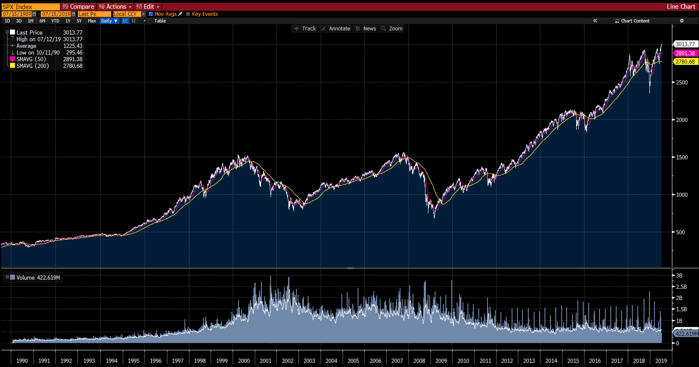

This section provides a brief overview of investment markets. It serves as a map for the rest of the document.
There is a 100% chance that you will experience a bear market if you spend long enough time in the markets. This brief comparison of bull market vs. bear market will get yourself better prepared for next one (sooner or later). Let's zoom into following S&P 500 Index's 30 years performance and recall the movements of market: peacefully, monumentally, insanely, and fiercely; meanwhile, consolidate what you should grasp: Dos and Dont's?
 Grab Bloomberg Terminal: S&P 500 Index 30 Years Performance
| Topic | Bull Market | Bear Market |
|---|---|---|
Definition |
In a bull market (e.g. 2014), a stock market index (a collection of stocks, like the S&P 500) spends most of its time trading
above the 50-day moving average (the purple line). |
In a bear market (e.g. 2008), a stock market index (a collection of stocks, like the S&P 500) spends most of its time below the
50-day moving average (the purple line). |
Features |
|
|
Dos and Dont's |
|
|
While an investment strategy should be driven primarily by your goals, financial situation, timeline, and risk tolerance. It should still consider any opportunities to manage, defer, and reduce taxes which may help you build wealth faster (additional ~1%+ per year).
There are several different levers to operate: selecting investment products, timing of buy and sell decisions, choosing tax-deferred accounts, taking advantage of losses, funding education expenses, and charitable giving.
Tax losses: A loss on the sale of a security can be used to offset any realized investment gains, and then up to $3,000 in taxable income annually. Some tax-loss-harvesting strategies try to take advantage of losses for their tax benefits when rebalancing the portfolio, but be sure to comply with Internal Revenue Service (IRS) rules on the tax treatment of gains and losses.
Loss carryforwards: In some cases, if your losses exceed the limits for deductions in the year they occur, the tax losses can be "carried forward" to offset investment gains in future years.
Capital gains: Securities held for more than 12 months are taxed as long-term gains or losses with a top federal rate of 23.8% (versus 40.8% for short-term gains). Being conscious of holding periods is a simple way to avoid paying higher tax rates.
Fund distributions: Mutual funds distribute earnings from interest, dividends, and capital gains every year. Shareholders are likely to incur a tax liability if they own the fund on the date of record for the distribution in a taxable account, regardless of how long they have held the fund. Therefore, mutual fund investors considering buying or selling a fund may want to consider the date of the distribution.
Tax-exempt securities: Tax treatment for different types of investments varies. For example, municipal bonds are typically exempt from federal taxes, and in some cases receive preferential state tax treatment. On the other end of the spectrum, real estate investment trusts and bond interest are taxed as ordinary income—with rates up to 37% for the top income tax bracket in 2018. Sometimes, municipal bonds can improve after-tax returns relative to traditional bonds. Investors may also want to consider the role of qualified dividends as they weigh their investment options. Like long-term capital gains, qualified dividends are taxed at a top rate of 23.8% (long-term capital gain rate of 20% plus the 3.8% Medicare surtax). Qualified dividends are subject to the same tax rates as long-term capital gains, which are lower than rates for ordinary income.
Fund or ETF selection: Mutual funds and exchange-traded funds (ETFs) vary in terms of tax efficiency. In general, passive funds tend to create fewer taxes than active funds. While most mutual funds are actively managed, most ETFs are passive, and index mutual funds are passively managed. What's more, there can be significant variation in terms of tax efficiency within these categories. So, consider the tax profile of a fund before investing.
Retirement accounts: Retirement accounts (401(k)/403(b)) can offer a potential double dose of tax advantages—contributions you make may reduce your current taxable income (if income eligibility requirements are met), and any investment growth is tax-deferred. After age 70½, however, there are required minimum distributions (RMDs). 2019 Annual contribution limits: $19,000 per year per employee If age 50 or above, $25,000 per year.
IRA accounts: With a Traditional IRA or Roth IRA, you contribute after-tax dollars, but investment gains are tax-deferred, and withdrawals in retirement are tax-free, provided you hold the account for 5 years and meet one of the following conditions: you are age 59½ or older, are disabled, make a qualified first-time home purchase (lifetime limit $10,000), or have died. Roths have no RMDs during the lifetime of the original owner so they can also be useful vehicles for estate planning. 2019 Annual contribution limits: $6,000 per year If age 50 or above, $7,000 per year.
Tax-deferred annuity: Most tax-advantaged accounts have strict annual contribution limits and required minimum distribution rules. If you are looking for additional tax-deferred savings, you may want to consider tax-deferred annuities, which have no IRS contribution limits and are not subject to RMDs. No contribution limit.
529 savings plans: 529 accounts will allow you to save after-tax money, but get tax-deferred growth potential and federal income
tax-free withdrawals when used for qualified expenses including college and, since 2018, also up to $10,000 per student per year in
qualified K–12 tuition costs. The maximum contribution limit for New York's 529 Program (Direct) is $375,000. Up to $10,000 is deductible
annually from New York State taxable income for married couples filing jointly; single taxpayers can deduct up to $5,000 annually.
The 529 plans owned by college students or their parents count as assets and reduce need-based aid by a maximum of 5.64 percent of the
asset’s value. That means if you have $20,000 in a college-savings plan for your daughter, her aid would be reduced by roughly $1,100. For
financially independent students who hold their own 529 plans, the assessment is a far larger 20 percent, that’s not typical. but the
tax-free investment gains you've earned in your 529 account could likely outweigh this tiny loss.
Health savings accounts (HSAs) Health savings accounts allow you to save for health expenses in retirement. These accounts have the potential for a triple tax benefit—you may be able to deduct current contributions from your taxable income, your savings can grow tax-deferred, and you may be able to withdraw your savings tax-free, if you use the money for qualified medical expenses.
Charitable giving: Contribute appreciated stock instead of cash; Contribute real estate or privately held business interests (e.g., C-corp and S-corp shares; LLC and LP interests); Accelerate your charitable giving in a high-income year with a donor-advised fund.
Bonds, with the exception of tax-free municipal bonds and US Saving Bonds, are generally highly tax-inefficient, because they generate interest payments that are taxed at ordinary income rates. Potentially higher returning types of fixed income investments, such as US High Yield and Emerging Markets Debt, are the most tax-inefficient.
REITs are also rated low on the tax-efficiency scale. That's because they are required by law to pay out at least 90% of their taxable income, and, unlike other equities, this income is generally taxed at higher ordinary income rates.
Generally you may want to consider putting the most tax-efficient investments in taxable accounts and the least in tax-deferred accounts like a traditional IRA, 401(k), or deferred annuity, or a tax exempt account such as a Roth IRA (see table below).
| Asset types/features | Tax treatment of expected returns | Taxable Account | Tax-deferred/exempt Account |
|---|---|---|---|
Tax-free municipal securities and municipal mutual funds |
Tax exempt |
More appropriate |
Less appropriate |
Equity securities held long-term for growth |
Taxed at long-term capital gain rates |
More appropriate |
Appropriate |
Equity index funds/ETFs (other than REITs) |
More appropriate |
Appropriate |
|
Tax-managed mutual funds and managed accounts |
More appropriate |
Less appropriate |
|
Real estate investment trusts (REITs) |
Taxed at ordinary income rates |
Less appropriate |
More appropriate |
High-turnover stock mutual funds that delivery effectively all returns as short-term capital gains |
Less appropriate |
More appropriate |
|
Fully taxable bonds and bond funds (i.e., corporates) |
Less appropriate |
More appropriate |
This section collects the reading notes and drafts emerged thoughts, later will be distilled and organized into this manual.
Emerged Thoughts
Set up you backdoor Roth IRA if necessary.
To balance your portfolio, think to use your savings first, instead of selling.
Use your tax-deferred accounts 401(k), 403(b) or Roth IRA to do more aggressive growth investment.
Unwavering Saving to Invest
A lifetime based on the habit of thrift--spending less than you might and deferring the spending you do--is essential to saving.
"Pay yourself first" by putting money into savings on a regular basis.
Borrowing with a mortgage is very different from "being in debt."
Financial Literacy
If you want to get rich, you need financial literacy which is the ability use knowledge and skills to manage financial resources effectively for a lifetime of financial well-being.
That means being able to understand how to balance a budget, buy a home, fund your children's college education, save for your own retirement, avoid bankruptcy, use debt wisely, and assess and choose form a pool of complex financial products. Furthermore, when the time comes, it means making sure you have enough retirement income for as long as you live.
Qualified Dividends
Qualified dividends are generally dividends from shares in domestic corporations and certain qualified foreign corporations which you have held for at least a specified minimum period of time, known as a holding period. Another requirement is that the shares be unhedged; that is, there were no puts, calls, or short sales associated with the shares during the holding period.
Qualified dividends are reported on Form 1099-DIV in line 1b or column 1b. However, not all dividends reported on those lines may have met the holding period requirement. Those non-qualified dividends, as well as other ordinary dividends, may be taxed at your ordinary income tax rate, which can be as high as 37%.
Holding periods:The fund must have held the security unhedged for at least 61 days out of the 121-day period that began 60 days before the security’s ex-dividend date. (The ex-dividend date is the date after the dividend has been paid and processed and any new buyers would be eligible for future dividends.) The same for your stocks.
Consider this hypothetical situation in which you have dividends reported on Form 1099-DIV as qualified from shares in XYZ fund, the form shows $1,800 in column 1a and $900 in 1b (Qualified Dividend). You purchased 10,000 shares of XYZ fund on April 27 of the tax year. You sold 2,000 of those shares on June 15, but continue to hold (unhedged at all times) the remaining 8,000 shares. The ex-dividend date for XYZ fund was May 2. Therefore, during the 121-day window, you held 2,000 shares for 49 days (from April 28 through June 15) and 8,000 shares for at least 61 days (from April 28 through July 1). Your eligible qualified dividends would be: $900 * 80% = $720.
Passively Managed Index Funds
Sensible investors embrace passively managed index funds. Ultimately, a passive index fund managed by a not-for-profit investment management organization represents the combination most likely to satisfy investor aspirations.
This section provides a list of books, e-books, articles, newspapers, web content and other materials referenced by this manual.